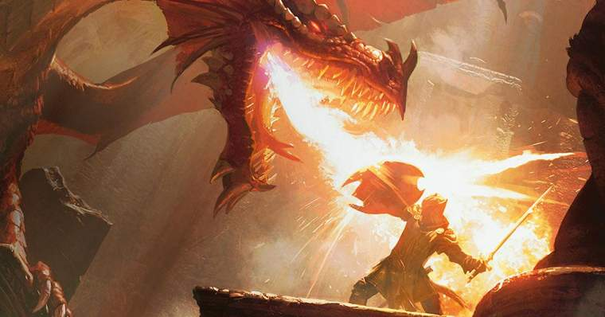
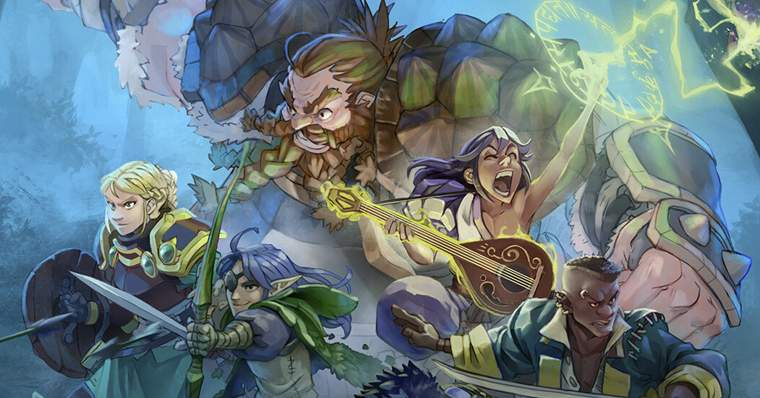
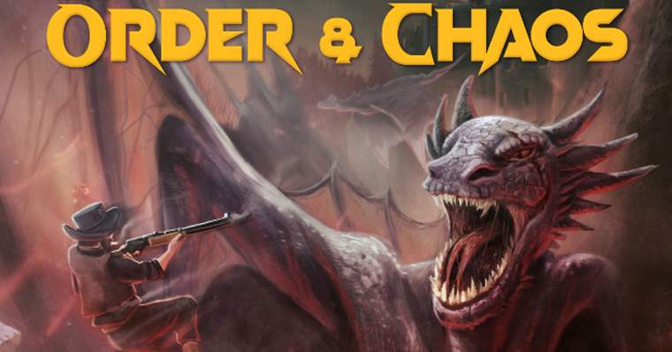

Sistemas
Os sistemas são os universos dos RPGs, cada um com um gênero diferente, podendo ir de Era medieval
para Super Heróis.
Cada sistema possuí suas próprias regras e aventuras, então, por que não olhamos
alguns desses sistemas?
Dungeons & Dragons
Provavelmente o sistema mais conhecido de todos, e o que mais vem em mente quando a gente pensa em jogar RPG de mesa.
Dungeons and Dragons é um sistema de RPG geralmente ligado ao cenário de fantasia medieval, remetendo à histórias como Senhor dos Anéis, por exemplo.
O sistema usa diversos dados, sendo o principal deles o D20 para fazer a maioria dos testes. Você tem uma grande variedade de raças e classes para personalizar seu personagem, como elfos, anões, bárbaros e magos.

Tormenta
Tormenta é um sistema completamente criado aqui no Brasil.
Lançado em 1999 como um encarte especial na revista Dragão Brasil, Tormenta conquistou logo o coração dos fãs de RPG.
Esse amor fez com que o sistema deixasse de ser apenas um encarte e virasse um sistema completo, com várias edições e muitos jogadores.
Inclusive, em 2019, Em 2019, em comemoração aos 20 anos do universo, foi lançado o financiamento coletivo #Tormenta20 para criação do novo manual básico do jogo.

Order & Chaos
Falando em RPG brasileiro, um sistema novo e recente que vale muito à pena conferir é Order & Chaos.
A proposta do jogo Order & Chaos é prover um sistema alternativo de RPG onde poucas páginas lhe capacitarão mestrar e jogar uma aventura completa, com um conjunto original de regras que podem ser adaptadas à qualquer tema ou universo ficcional.
Em um mundo onde a informação necessita ser rápida e precisa, onde existem infinitas outras fontes de entretenimento, o sistema O&C quer unir jogadores experientes sem desencorajar os novatos, que podem se sentirem desestimulados a aprender sistemas que tradicionalmente possuem centenas de páginas.
O sistema visa simplificar, com reconhecido sucesso, o processo de criação de campanhas e peças, focando-se naquilo que possivelmente é o ponto mais sedutor desta atividade: a interpretação.

Call of Cthulhu
Você pode nunca ter jogado esse sistema, nunca ter visto ninguém jogando, mas eu te garanto que, só de ler o nome dele, você já sabe o que esperar deste tipo de RPG.
Para os desavisados, Call of Cthullu adapta um cenário das famosas obras de H.P. Lovecraft.
Em um mundo de horrores e suspense, onde a sua sanidade estará constantemente sendo testada.
Cyberpunk 2020
O cenário deste sistema se passa nos EUA em um mundo cyberpunk, situado no ano de 2020 após um colapso econômico, seguido de um período de lei marcial, diversas multinacionais assumem o poder do pais.
Surge um cenário de contrastes: com alta tecnologia, beleza, pobreza, opressão, etc.
O sistema também presa muito pela interpretação e pelas estratégias dos jogadores do que nos combates francos, para se ter progressão de personagem.
Mutantes e Malfeitores
O sistema foi criado como uma variação do sistema D20 com uma vasta coleção de regras e cenários únicos, voltados com o único objetivo de fazer você jogar uma campanha de super-heróis, ou até mesmo super-vilões!